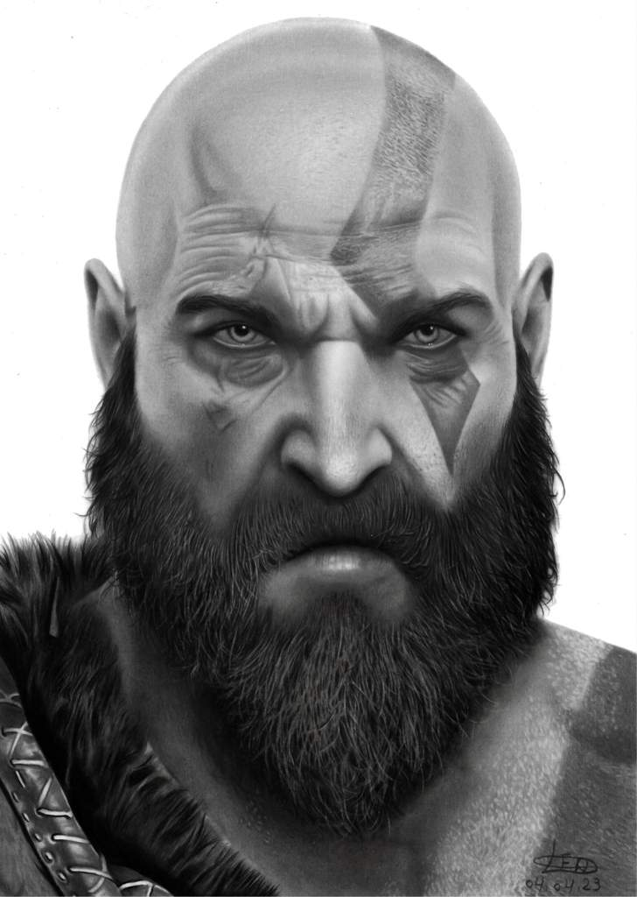
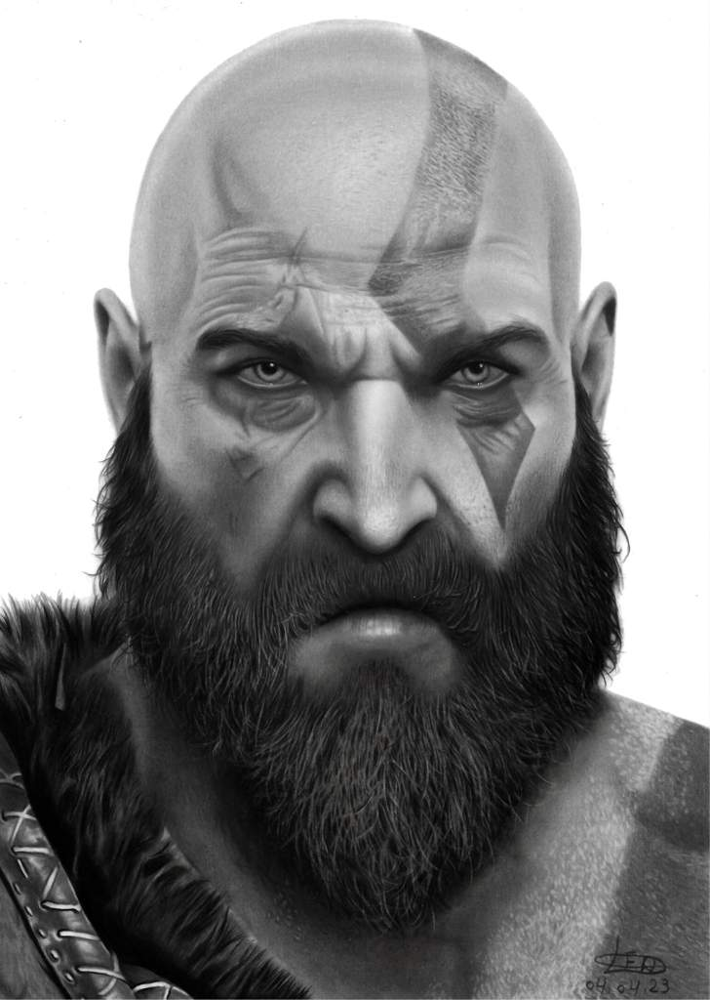
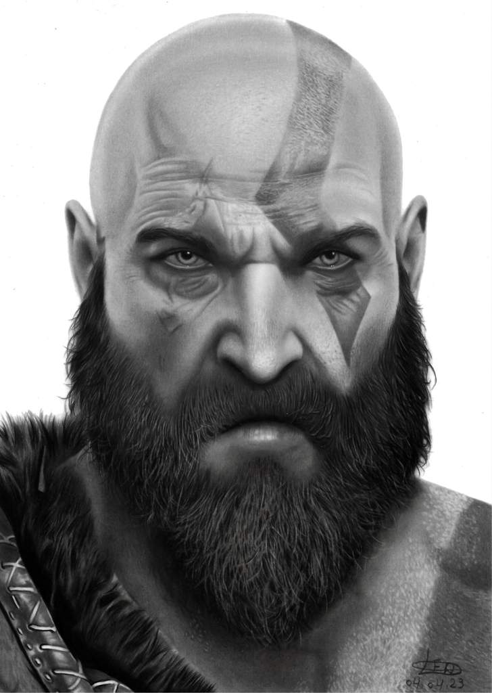

A GS Artes cria retratos em preto e branco, feitos à mão, que capturam a beleza e a essência de cada pessoa. Com atenção aos detalhes, transformamos cada rosto em uma obra de arte única, perfeita para decorar ambientes, celebrar momentos especiais e presentear com significado. Aqui, cada traço é feito com dedicação, refletindo a singularidade de cada história.
